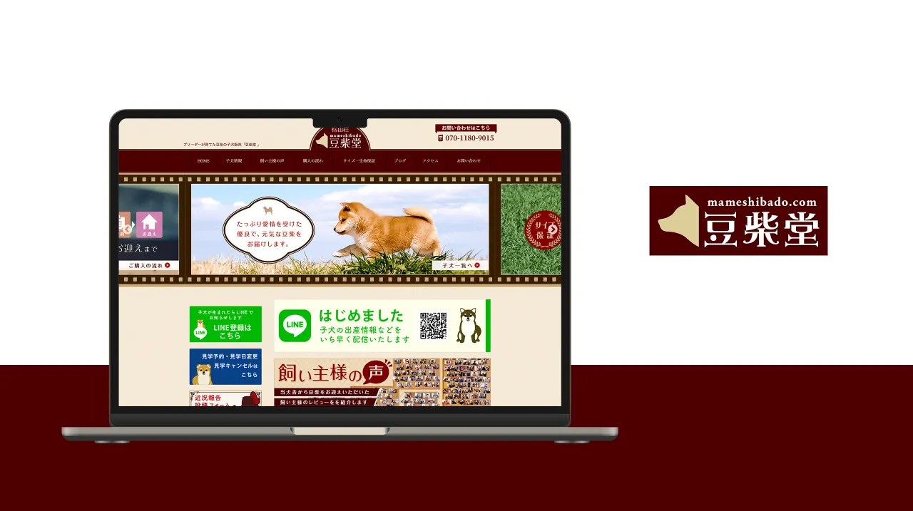

豆柴堂
豆柴同士の
他の制作者が
- 担当範囲
- WordPress
バージョンアップ／ PHP不具合修正／ バナー制作 - 制作時期
- 2024年7月〜9月
- 備考
- サイトの
デザイン・ 構築は 別の制作者です
TASKS
- WordPressを
4系から 6系へ アップデートし、 あわせて サーバーのPHPを 新しいバージョンに 切り替えました。 - 他の制作者が
作った 自作テーマの コードを読み、 新しいPHPでは 使えなくなった 書き方が 原因のエラーを 一つずつ修正。 画面に 表示されていた エラーメッセージを 解消しました。 - 更新に伴う
表示や 動作の不具合も あわせて 修正しました。
BANNERS
サイトの